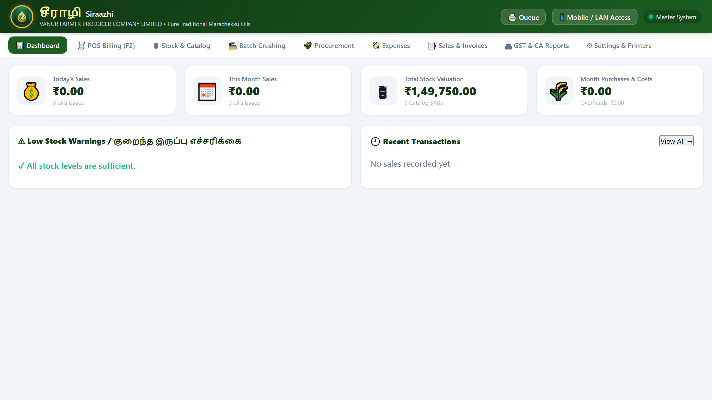
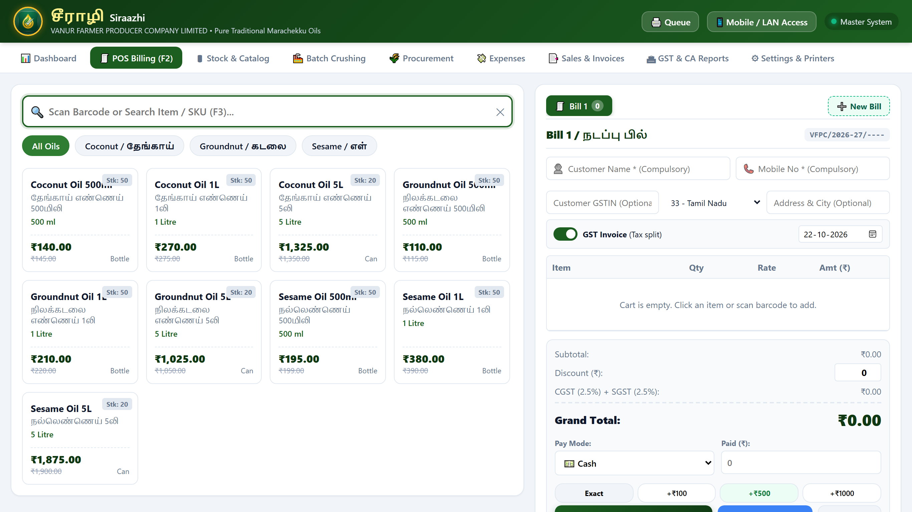
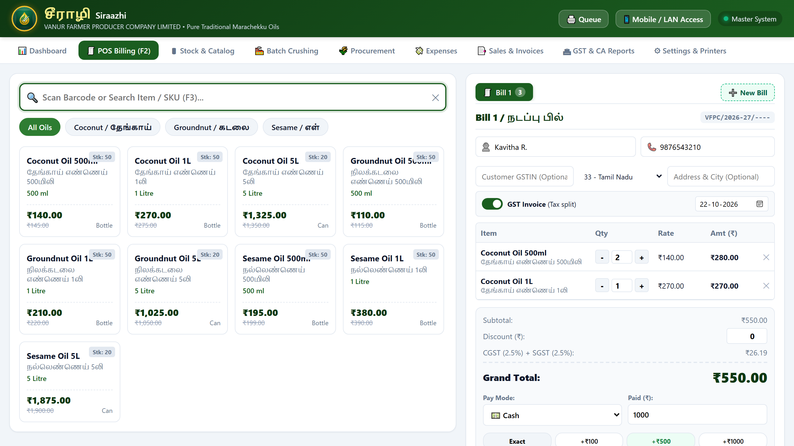
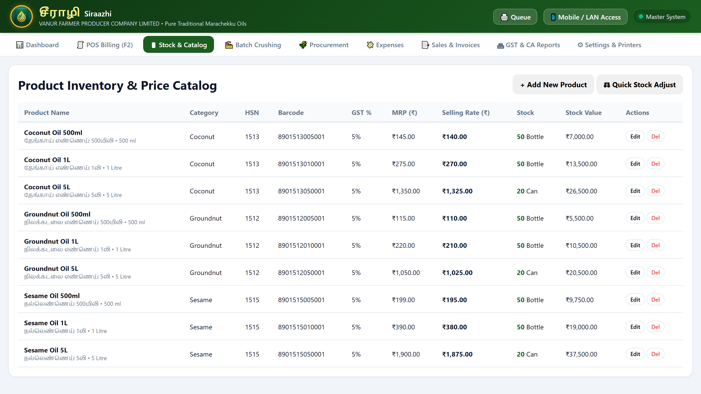
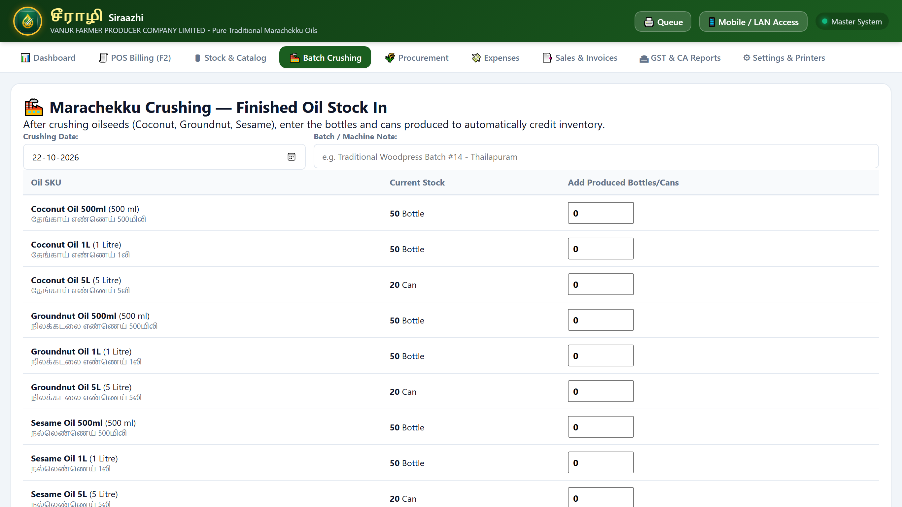
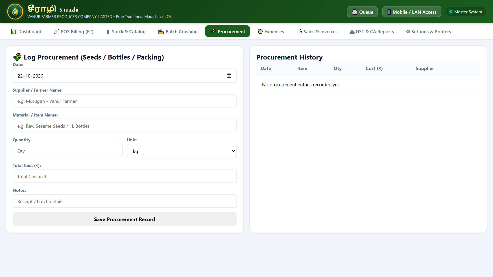
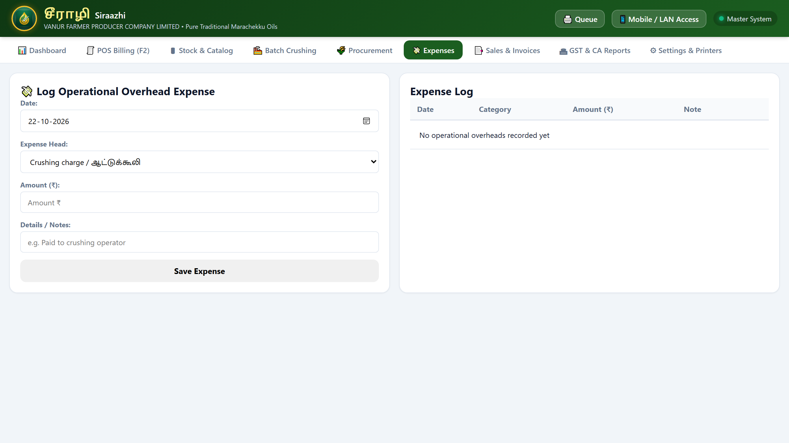
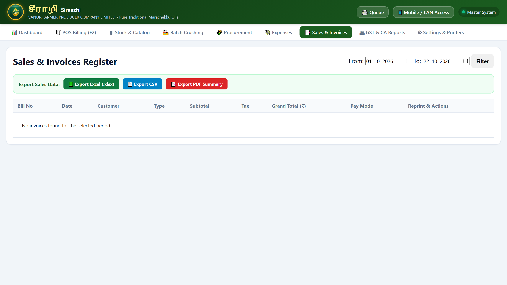
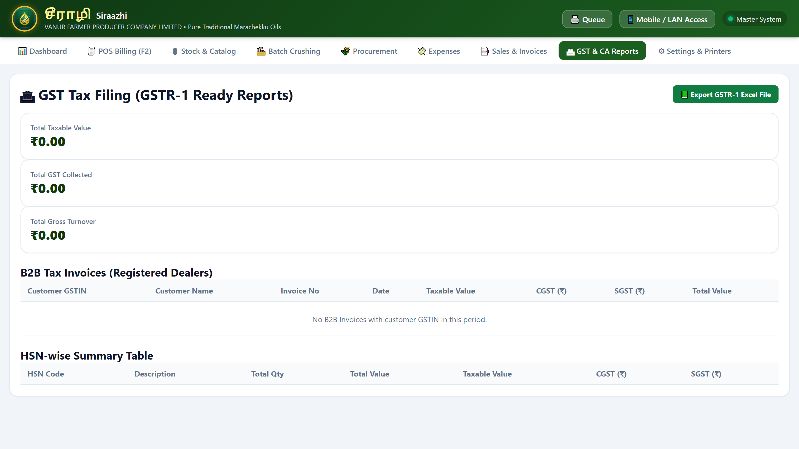
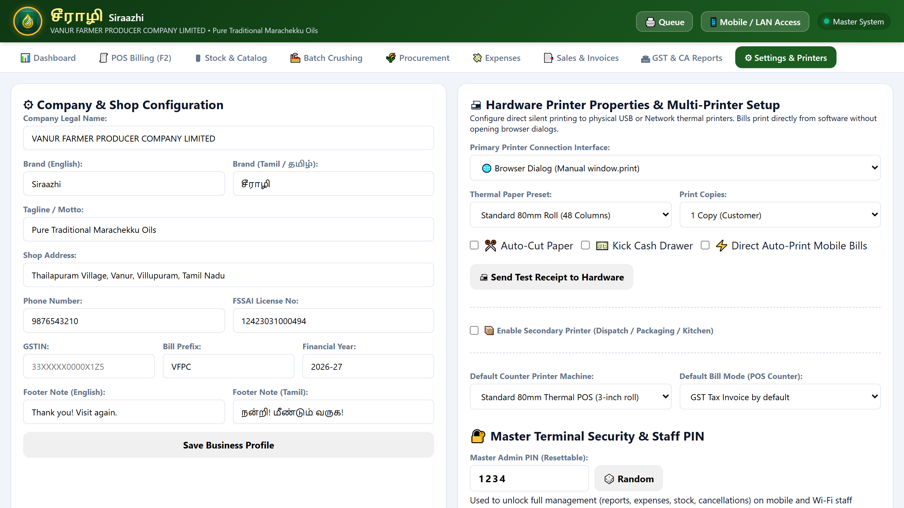

1. System Overview & Getting Started
Siraazhi Pro POS is an offline, standalone retail point-of-sale and oil milling management system built specifically for Vanur Farmer Producer Company Ltd (VFPC) in Tamil Nadu. It stores all data locally in an embedded SQLite database (data/pos.db) and works 100% offline without needing internet connectivity.
Starting the System Every Morning:
- Turn on your main counter computer.
- Double-click the Siraazhi Pro POS shortcut icon on your Windows desktop.
- The software launches immediately in a dedicated desktop window on port
8080(or your custom port) ready to serve customers. - Accidentally closed the window? Double-click the desktop icon again—it instantly reconnects to the active server without port conflicts or duplicate processes.
Chapter 1: The Executive Dashboard
The Dashboard provides store managers and board members with an immediate snapshot of daily operations.

Key Dashboard Metrics:
- Today's Revenue: Total cash, UPI, card, and credit sales recorded today.
- Total Invoices: Total count of customer transactions completed today.
- Total Stock Value: Live total monetary valuation of all cold-pressed oils, seeds, and byproducts currently in your warehouse.
- Low Stock Warnings: Real-time alerts displaying products that have reached or fallen below their safety alert threshold.
Chapter 2: Counter Sales & Fast Checkout
The POS Billing screen is engineered for ultra-fast, queue-busting transactions at the retail cash counter. It is fully bilingual (Tamil & English) so cashiers can instantly identify any oil SKU.

Step-by-Step Checkout Flow:
- Add Items: Click any product card on the screen, scan a barcode, or press F2 / F3 to type a product name or SKU code.
- Adjust Quantities: Use the [+] and [-] buttons in the cart to set the exact number of bottles or cans.
- Toggle Invoice Mode (F4):
- Green ON (GST Tax Invoice): Prints an official tax invoice with 2.5% CGST + 2.5% SGST breakdown.
- Gray OFF (Retail Cash Memo): Prints a simple cash bill with zero tax lines.
- Enter Customer Information: Type customer name and 10-digit mobile number. For registered business buyers, enter their 15-digit GSTIN number.
- Choose Payment Method: Cash, UPI / GPay, Card, or Credit.

Since your counter uses a standard manual cash drawer, use the Quick Cash Buttons (Exact, +₹100, +₹500, +₹1000) or type the cash handed over by the customer. The green Change Due box calculates the exact amount of balance change to return, completely preventing cashier calculation errors.
Press F10 or click Print Bill to complete the sale. The receipt prints immediately on your thermal printer and inventory is automatically deducted.
Chapter 3: Multiple Active Bills (Hold Cart)
If a customer needs to pick up an extra item from the shelf while at the counter, you never need to cancel or clear their cart.
- Press F8 (or Ctrl + N, or click the [+] button) at the top of the cart area to open a new tab (Bill #2).
- Serve the next waiting customer and print their receipt.
- Click back on Bill #1 when the first customer returns—all their items and customer details are safely preserved!
Chapter 4: Inventory & Stock Management
The Inventory tab provides live visibility over finished oils, raw seeds, and byproduct stock.

Verified HSN Codes & GST Rates:
- Groundnut Oil (நிலக்கடலை): HSN
1512— 5% GST (CGST 2.5% + SGST 2.5%) - Coconut Oil (தேங்காய்): HSN
1513— 5% GST (CGST 2.5% + SGST 2.5%) - Sesame Oil (எள் / நல்லெண்ணெய்): HSN
1515— 5% GST (CGST 2.5% + SGST 2.5%)
Stock Badges:
- Green Badge: Healthy stock available on the shelf.
- Orange Badge: Low stock alert—item has reached or fallen below reorder threshold.
- Red Badge: Out of stock—0 bottles available.
Physical Audits & Adjustments:
If an oil bottle breaks or is taken for quality testing, click the Adjust button, choose Subtract, type the quantity, and enter a note (e.g., Customer sample tasting). The change is logged into the audit ledger.
Chapter 5: Oil Production & Batch Crushing
Traditional wood and stone cold-pressed oil milling requires careful batch logging to track extraction yield.

Logging a Fresh Milling Batch:
- Click Production -> + Log New Batch.
- Select the raw seed type (e.g., Raw Groundnut Kernels).
- Enter the input seed weight in Kilograms (e.g.,
100.00 kg). - Enter the filtered pure oil yield in Litres (e.g.,
42.50 L). - Enter the oilcake byproduct weight in Kilograms (e.g.,
55.00 kg). - Click Save Batch. Raw seeds are automatically deducted and finished oil and oilcake stocks are immediately credited!
Chapter 6: Raw Material Purchases
The Purchases tab tracks seed procurement from farmer members and packaging supplies (bottles, caps, tins) from vendors.

Chapter 7: Daily Shop Expenses & Overheads
Record daily overheads (labour wages, crushing mill electricity, transport fuel, packaging consumables, tea/refreshments) to accurately calculate net monthly profits.

Chapter 8: Invoices Register, Reprints & Protected Cancellations
View, search, reprint, or cancel any past transaction from the Bills / Sales History tab.

To prevent unauthorized bill tampering, canceling an invoice strictly requires the Master PIN (default: 1234) and a mandatory cancellation reason. When a bill is canceled, all items on that bill are automatically returned to your live stock!
Chapter 9: GST Tax Filing & GSTR-1 Excel Exports
Generate one-click GST tax returns for your Chartered Accountant (CA) without needing manual bookkeeping.

Click Export to Excel (.xlsx) to download a multi-tab formatted spreadsheet that matches the official GST Portal offline format.
Chapter 10: Shop Settings & Printer Configuration
Configure company details, FSSAI registration numbers, and multi-format receipt printers.

Supported Printer Formats:
- 80mm Thermal Receipt (Standard 3-Inch Roll): Recommended for retail counters.
- 58mm Thermal Receipt (Compact 2-Inch Roll): Portable mini printer format.
- A4 Corporate Tax Invoice: Full-page letterhead format for laser and inkjet printers.
- A5 Delivery Slip: Compact half-page delivery note.
- Direct PDF Generator: Saves high-resolution PDF receipts for WhatsApp customer sharing.
Chapter 11: Mobile Staff Wi-Fi Billing & Print Queue
Turn any Android phone, iPhone, or iPad into a mobile billing terminal over your shop's Wi-Fi router.
How Staff Connect Their Phones:
- Connect the phone to the shop Wi-Fi network.
- Scan the QR code shown on the Master PC screen (e.g.,
http://192.168.1.3:8080). - The mobile billing screen opens in the phone browser. Staff operate in Restricted Staff Mode (can only bill items; cannot delete bills or view profit numbers). The business owner can unlock Master Mode on any device using the Master PIN (1234).

Chapter 12: Automatic Safety Backups & Data Protection
Siraazhi Pro POS automatically creates rolling daily database backups (data/backups/pos_auto_YYYYMMDD.db) every morning and retains the last 14 days of snapshots. To keep an external copy on a USB pendrive:
- Plug a USB pendrive into the counter computer.
- Go to the Settings tab and click Download Database Backup (.db) or Download JSON Backup.
- Save the file to your pendrive. In case of computer replacement, copying your database file restores your entire store in seconds!
Appendix A: Keyboard Shortcut Cheat Sheet
| Shortcut Key | Action | Description |
|---|---|---|
| F2 | Focus Barcode / SKU Lookup | Moves cursor into search bar for instant typing or scanning. |
| F3 | Select & Replace Barcode | Highlights existing search text for immediate replacement. |
| F4 | Toggle GST Invoice Mode | Switches between GST Tax Invoice (with CGST/SGST) and Retail Cash Memo. |
| F8 or Ctrl + N | Add New Bill Tab (Hold Cart) | Opens a new transaction tab without clearing the previous customer's cart. |
| F10 | Save & Print Bill | Finalizes transaction and prints receipt to default printer. |
| Esc | Dismiss Modals / Clear | Closes open dialog boxes, customer dropdown, or clears search fields. |
| Ctrl + P | Browser Print | Opens standard Windows printer selection dialog. |
Appendix B: Frequently Asked Questions & Troubleshooting
1. The thermal receipt printer is not printing anything.
Check that the paper roll is inserted correctly with the thermal side facing up, ensure the USB cable is firmly connected, and verify in Windows Printers & Scanners that your thermal printer is set as the default printer.
2. Mobile phone displays "Connection Timed Out" when scanning the QR code.
Ensure that both the computer and the mobile phone are connected to the exact same shop Wi-Fi network (not mobile cellular data). In Windows Defender Firewall, allow port 8080 (or your configured port) for Private Networks.
3. What if there is a sudden power cut?
Siraazhi Pro POS uses SQLite WAL (Write-Ahead Logging) storage. Even if power cuts abruptly, the database cannot be corrupted and all completed bills are 100% saved.
4. How do I change the Master PIN?
Go to the Settings tab on the Master PC, locate the Master PIN field, type your new 4-digit PIN, and click Save Settings.